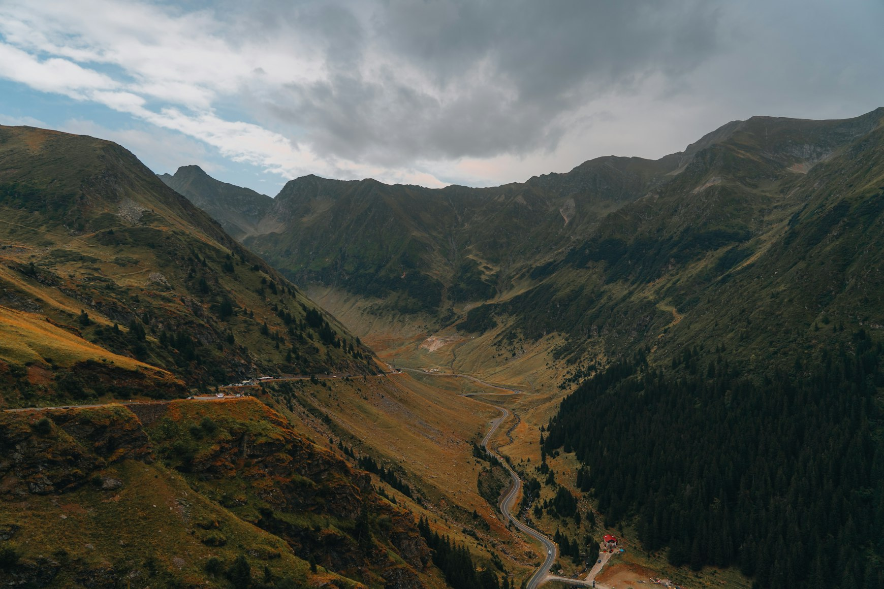
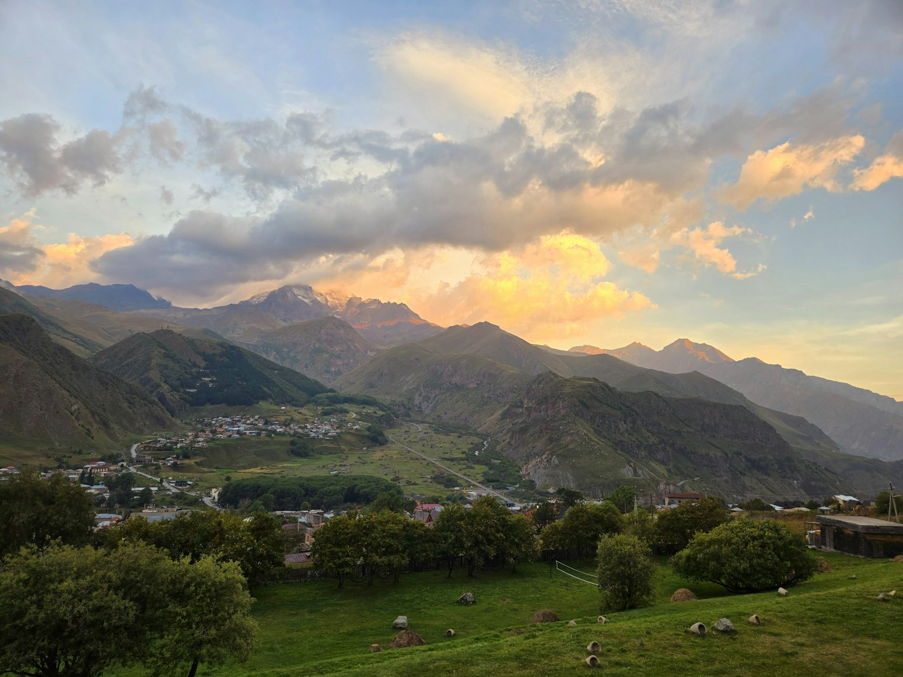
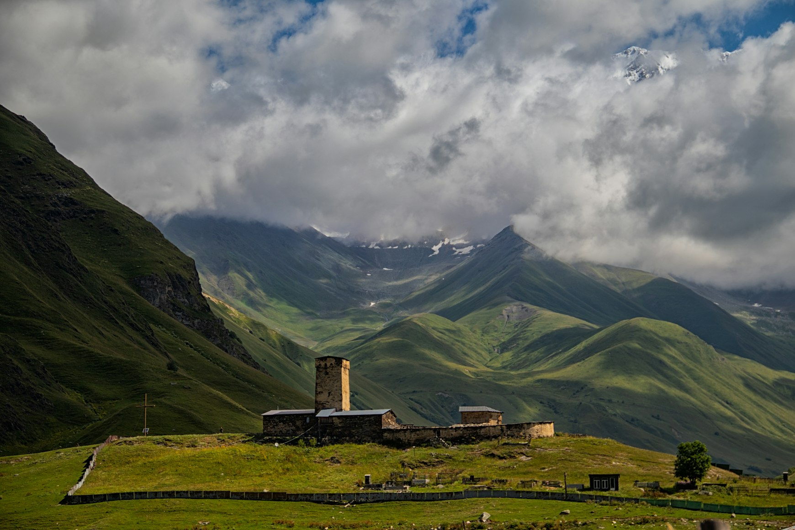
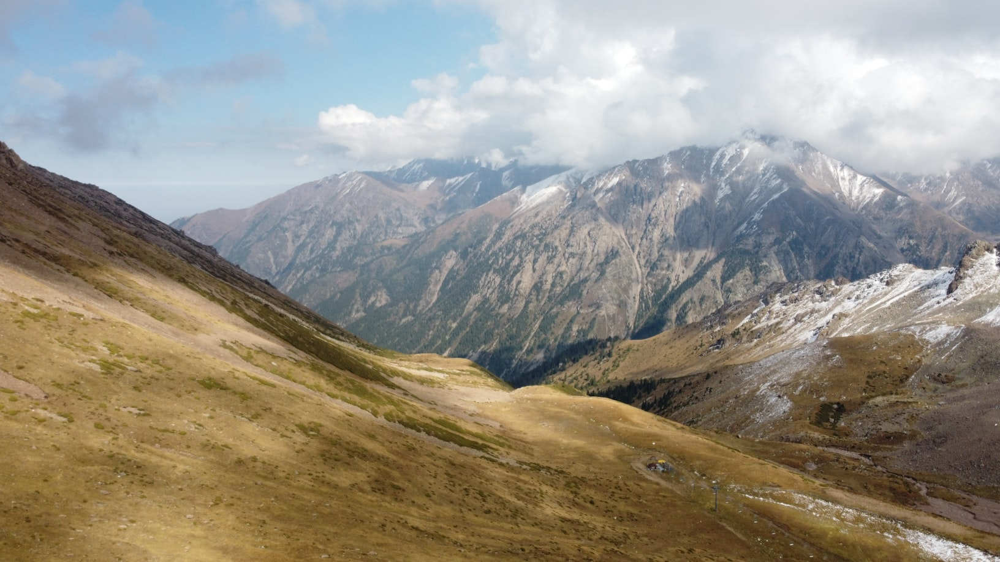
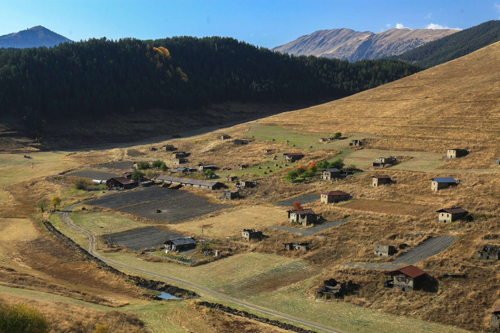
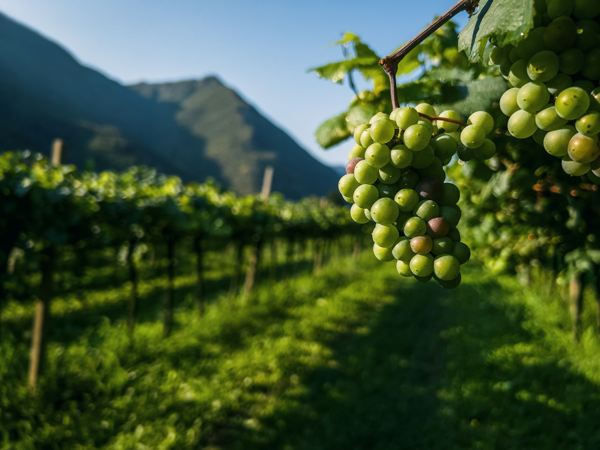
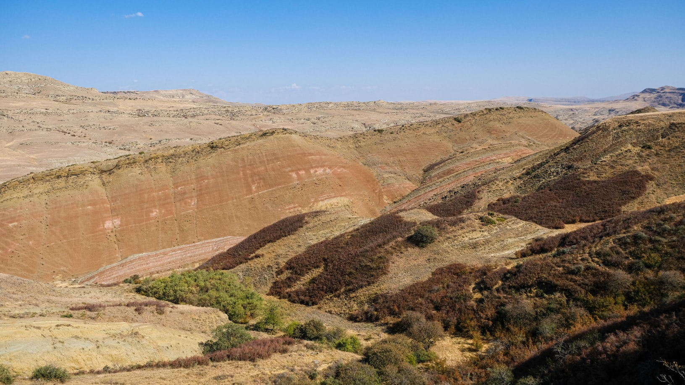
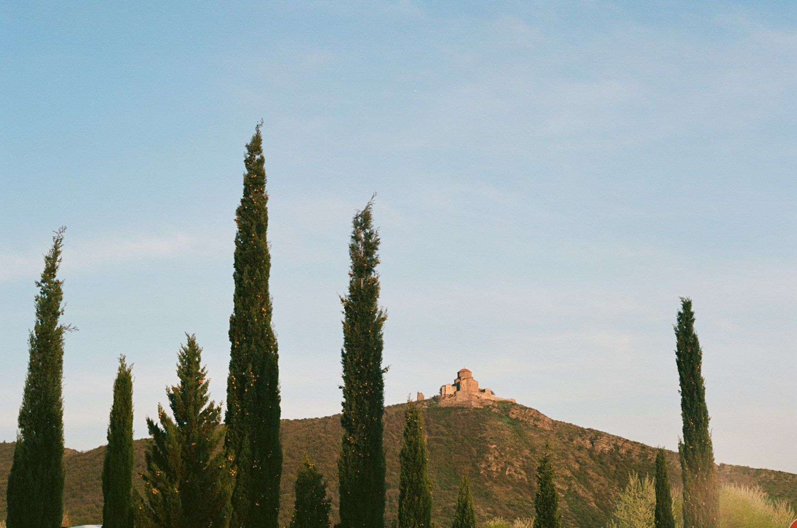
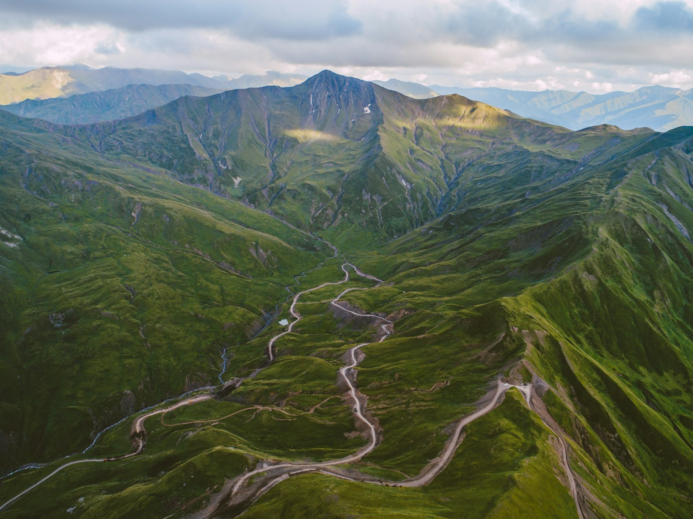
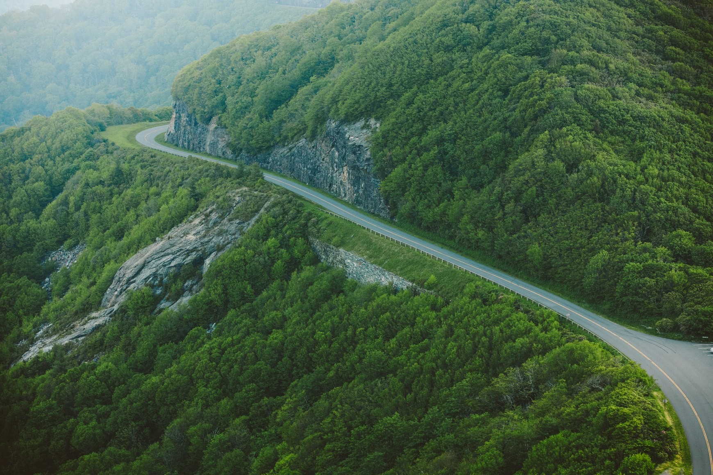

There are countries where travel revolves around cities.
Georgia rarely feels like one of them.
Even if a trip begins in Tbilisi — among old balconies, sulfur baths, wine bars, and the noisy streets of Sololaki — it quickly becomes clear that the most important part of the country exists between the points on the map. Not in the destinations themselves, but in the roads connecting them.
Distance feels different in Georgia.
Not because the country is large. On the contrary, it appears almost compact on a map. But the roads here behave as if space itself resists being reduced. Mountain passes slow movement down. Fog changes the rhythm of the journey. Rain suddenly erases entire slopes from view. Trucks crawl along serpentine roads. Cows step onto the highway without the slightest sense of urgency. And gradually the trip stops feeling like transportation between landmarks.
It becomes a state of mind.
Especially in the north and east of the country, where the landscape begins to feel too large for human scale.
That is where the feeling of infinity appears.
Not abstract infinity.
A physical one: long roads, disappearing phone signal, clouds at the level of the car windows, empty slopes, villages that appear for a few minutes and then dissolve back into the mountains.
The Georgian Military Highway and the Road to Kazbegi

The northern road unfolds gradually.
First come the dark waters of Zhinvali and the fortress of Ananuri above the reservoir. Then the concrete of Gudauri, the winding roads, the trucks near the Russian border, the clouds on the pass. And only after that — Stepantsminda beneath a mountain that seems too large for everything around it.
The Georgian Military Highway is one of the country’s most famous routes. But its popularity has done surprisingly little to weaken it.
Because this road does not work as a sequence of stops.
It works as a gradual shift in scale.
The farther north you go, the less the landscape feels designed around human life. After Gudauri, the mountains become colder and steeper. Clouds settle so low that the road sometimes disappears completely inside them. Trucks move slowly in almost endless lines. The slopes rise too abruptly.
At some point Georgia stops feeling like a country and starts feeling like a mountain system inside which humans were temporarily allowed to build a road.
Stepantsminda can feel crowded in summer. There are far more tourists here now than there were a few years ago. But the scale of the place still overpowers the infrastructure.
Especially in the morning.
Before the minibuses begin climbing toward Gergeti. Before Mount Kazbek fully reveals itself through the clouds. When the church itself looks less like the main attraction and more like a small dark structure beneath an overwhelming mass of rock and snow.
This route works best not as a rushed day trip from Tbilisi, but as slow movement with pauses.
Stay overnight.
Leave early.
Turn away from the main road.
Drive toward Truso Valley or Juta.
Because the real power of northern Georgia begins where the feeling of an “essential stop” ends.
Truso Valley

Most people go no farther than Gergeti.
But one of the strongest roads in the region leads into Truso Valley.
This is where the Caucasus becomes quieter.
The road follows the river through open land marked by mineral springs, rust-colored water stains on the ground, abandoned towers, and nearly empty slopes. There is less tourist traffic here. Less of the feeling that the place exists to be photographed.
Truso does not try to impress anyone.
That is exactly why it works.
There is a rare sense here of a landscape that has not been adapted for spectators. The mountains do not feel theatrical. They simply exist around the road — too large, too old, too indifferent to human presence.
Sometimes it feels as if the main element of the valley is not even the mountains themselves, but the wind.
It moves constantly through the open space, making the valley feel even wider.
The best way to experience Truso is slowly. Stop for no reason. Look not only at the horizon, but at the ground — mineral water, grass, old traces of roads, stone.
The valley reveals something important about Georgia: the strongest places are rarely the most famous ones.
Svaneti and the Road to Ushguli

If the northern road reveals scale through passes and movement toward the border, Svaneti does it differently.
Vertically.
The route to Mestia feels longer than it should. Especially after Zugdidi, when the road begins climbing into the mountains. First come the Inguri River and the dam. Then the valleys narrow. Then appear the first Svan towers, standing between houses as if time moves more slowly in these villages.
Svaneti never reveals itself immediately.
It grows gradually, layer by layer.
And the higher the road climbs, the less permanent everything human begins to feel. Houses look temporary. Villages feel too small. Even Mestia itself seems less like a town and more like a brief pause inside a vast mountain landscape.
The real continuation of the route is the road to Ushguli.
This is one of those roads where the journey slowly becomes more important than the destination. Beyond Mestia, the asphalt worsens, the slopes close in, and the weather changes almost hourly. The road moves along rivers, past towers, wet hillsides, cows, wooden fences, and houses with metal roofs.
Sometimes sunlight suddenly reveals the snowy peaks.
A few minutes later everything disappears back into clouds.
Ushguli does not feel perfect.
There is mud. Rain. Cold air. Old cars parked beside houses. But that is exactly what gives the place its power. It still feels like a real highland settlement rather than a completely polished tourist landscape.
In Svaneti you begin to understand that Georgian roads were not built for comfort.
They exist because people needed to live among these mountains.
Even if the geography itself clearly never intended to make that easy.
The Road Through Lentekhi

Most Svaneti itineraries follow the same pattern: arrive in Mestia, drive to Ushguli, return the same way.
But the stronger sense of journey begins when the route continues farther — through Lentekhi toward Racha and Kutaisi.
This part feels less tourist-oriented.
After Ushguli, the landscape changes again. There are fewer towers. Fewer tourist vehicles. The road itself seems less certain. At times it feels less like a famous travel route and more like a forgotten corridor between regions that modern tourism never fully absorbed.
And these are often the sections people remember most vividly.
Not because they contain the grandest views.
But because they create the feeling of a road without a prepared narrative.
Small villages.
Fog after rain.
Empty mountain curves.
Old bridges.
Rare passing cars.
Sometimes this is where Georgia begins to feel truly infinite — not through drama, but through the slow disappearance of familiar rhythm.
Tusheti and the Abano Pass

If there is one road in Georgia that feels like a route beyond the ordinary world, it is the drive through Abano Pass into Tusheti.
The road is seasonal and difficult. In winter the pass closes entirely under snow, and even in summer conditions depend heavily on the weather. The route should never be attempted without an experienced driver and a proper 4WD vehicle.
But that difficulty is precisely what makes Tusheti one of the strongest parts of the country.
After Kakheti, the road begins climbing sharply upward. It narrows. Cliffs move closer. Fog can erase visibility around a corner within seconds. Rocks lie directly on the road. Waterfalls cut across the route. Clouds sometimes drift level with the windows.
People often begin speaking more quietly in places like this.
Because the landscape becomes too large for ordinary reactions.
After the pass, the scenery suddenly opens: green slopes, stone towers, horses, villages like Omalo and Dartlo where modern life feels unimaginably distant.
Tusheti cannot really be described as untouched.
People have always lived here.
But the region still feels inaccessible — not as a romantic idea, but as a physical reality. And that feeling has disappeared from most of Europe.
Kakheti Through Gombori

Before Tusheti comes Kakheti.
And the contrast matters.
After the northern routes, eastern Georgia initially feels softer. The road through the Gombori Pass winds through forested hills before gradually revealing the Alazani Valley — a wide landscape of vineyards, small towns, and distant mountains on the horizon.
Kakheti rarely produces the same immediate impact as Kazbegi or Svaneti.
But it offers another kind of infinity.
Not vertical.
Horizontal.
Long evening light.
Dust on the roads.
Vineyards.
Slow movement between Telavi and Sighnaghi.
Warm air in late September.
After the tightness of the mountain routes, Kakheti feels almost like a deep exhale.
That is why it works so well within a larger Georgian road trip.
Vashlovani

Most people imagine Georgia as a mountain country.
That is why Vashlovani feels so surprising.
Near the Azerbaijani border, the landscape suddenly changes into something almost semi-desert: dry hills, steppe wind, clay roads, sparse trees, long empty stretches without villages or shade.
Here you begin to understand how radically different Georgian geography can be.
Vashlovani does not resemble the Caucasus of travel postcards.
It feels more like a borderland — a place where the usual image of Georgia starts breaking apart.
The roads often become little more than tire tracks through dry earth. A proper off-road vehicle is essential, and some areas of the national park require registration and preparation.
But this is also where one of the country’s strongest versions of infinity appears.
Emptiness without romanticism.
A landscape that does not try to look beautiful for anyone.
Wind.
Dust.
Low horizons.
Birds circling overhead.
Wheel tracks across dry ground.
After Svaneti or Kazbegi, Vashlovani changes the perception of Georgia completely.
The country suddenly stops feeling only mountainous.
It becomes almost steppe-like.
David Gareja

The route to the David Gareja monastery complex continues the atmosphere of eastern Georgia.
The road gradually leaves behind populated areas and enters a dry, nearly empty landscape where only hills, wind, and isolated monastery structures remain.
This is one of the quietest routes in the country.
Not literally — the wind is almost constant here.
Emotionally.
It feels as if the geography itself slowly removes everything unnecessary.
First the cities disappear.
Then the trees.
Then the billboards.
Then the traffic.
Until only the road, the dry earth, and the monastery carved into the hillside remain.
David Gareja reveals something important: infinity is not always connected to huge mountains.
Sometimes it emerges from emptiness itself.
Racha

Compared to Svaneti, Kazbegi, or Tusheti, Racha feels almost quiet.
That is exactly why people often remember it more vividly than the more famous regions.
The roads are softer here.
The hills lower.
The routes calmer.
But Racha contains a rare feeling of slow movement that has almost disappeared from modern travel.
The roads through Ambrolauri, Oni, and the surrounding villages do not feel like a chase for landmarks. They feel more like a long observation of landscape itself.
Fog over forests.
Rivers beside the road.
Old houses.
Small roadside shops.
Empty curves without traffic.
Racha does not try to impress anyone.
That is precisely why it works so well.
Why Roads in Georgia Feel Infinite

The biggest mistake is looking at Georgia only through a map.
The country feels small until you begin driving through it.
Because Georgian roads rarely reduce distance.
They expand it.
Every pass changes the climate.
Every valley changes the rhythm of movement.
Every region changes the feeling of time itself.
After several days on the road, it becomes clear that Georgia is not organized as a convenient route between destinations.
It is organized as a sequence of different worlds connected by difficult, beautiful, and unusually long roads.
That is why the feeling of infinity appears here so often.
Not because of literal distance.
But because of the scale of the landscape surrounding you.
And because Georgia still preserves something increasingly rare: the feeling that the world has not yet been fully adapted to speed, comfort, and permanent accessibility.